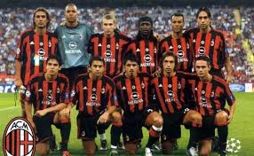

HISTORIAS DE GRANDES CLUBES
MILAN
MILAN
Associazione Calcio Milan, frequentemente abreviado como AC Milan ou Milan,
é um clube de futebol italiano com sede em Milão. Devido às suas relevantes
conquistas, o clube é considerado um dos mais importantes do mundo. Partilha
com o seu maior rival, a Internazionale, o Estádio Giuseppe Meazza,
também conhecido como San Siro, que tem capacidade para 80 018 espectadores
e é o palco do clássico de Milão, o Derby della Madonnina.[1]

Junto com a Inter, o Milan é a segunda equipe com mais conquistas no
Campeonato Italiano, com 19 títulos, atrás apenas da Juventus, que tem 36 Scudetti.
É o segundo clube da história com mais conquistas na Liga dos Campeões da UEFA,
tendo sido campeão sete vezes, foi por 3 vezes campeão da Copa Intercontinental.
Venceu ainda o Mundial de Clubes da FIFA de 2007.[2]
Com base nos resultados de uma pesquisa conduzida pela empresa Demos & Pi em
setembro de 2011, o Milan é o terceiro a ter mais torcedores na Itália, tendo
ganho a preferência de 16% da amostra. A nível continental, o Milan é o sétimo
entre as equipes com mais torcedores na Europa, com cerca de 18,4 milhões de
adeptos, conforme demonstrado por um estudo publicado pela empresa alemã
Sport+Markt, em setembro de 2010.[3]
O Milan foi um dos fundadores do extinto G-14, um grupo que representa os dezoito
principais clubes da Europa, e também é um dos membros fundadores da Associação
Europeia de Clubes, seu substituto. O time foi eleito pela FIFA o 9° maior clube
de futebol do século XX.[4]
O clube é o mais bem sucedido da Itália com 4 mundiais de clubes, só atrás do
Real Madrid Club de Fútbol que tem 8, e também é o segundo time na Europa com
mais Liga dos campeões com 7, só atrás também do Real Madrid, que detém o
recorde de 14 títulos na competição.